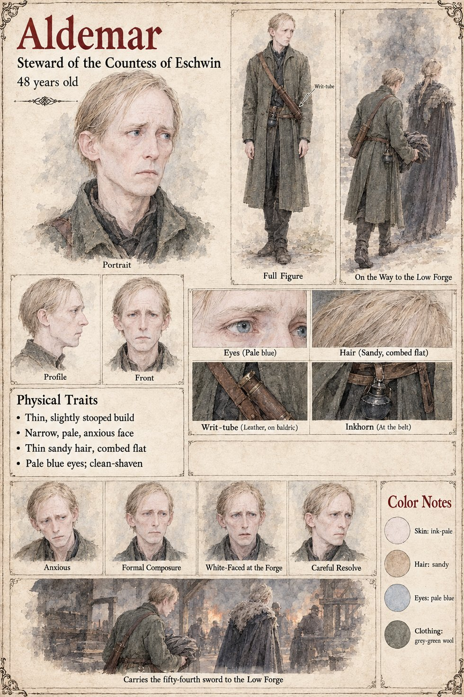

Aldemar
Steward of the Countess of Eschwin · 48 years old
The steward of the Countess of Eschwin, Adalgund: a thin, slightly stooped man of forty-eight with a narrow, pale, anxious face, thin sandy hair combed flat, pale blue eyes and a clean-shaven chin, in a long grey-green wool coat with a leather writ-tube on a baldric and an inkhorn at his belt. Sigebert Marl's page has the Countess's steward pay forty marks for the Duke's order to take the Low Market, and does not name him; this is the only sheet of a steward of hers, and this page takes him to be that steward.
The sheet's large scene is captioned Carries the fifty-fourth sword to the Low Forge: he walks toward the glow of the forges with a cloth-wrapped blade held in both arms, and a figure in a fur-trimmed cloak walks beside him. The sheet names neither the figure nor the owner of the blade, but the publication notes say that he accompanies the Countess to the Low Forge and carries the oiled bundle of the fifty-fourth sword. The figure in the fur-trimmed cloak is therefore presumably Adalgund herself, and the blade is hers: her own sheet draws a fifty-fourth blade in oiled cloth, and Theudebald's page has the treasury pay a hundred and forty marks a blade for hers under the heading Repairs to the Eschwin Bridge. The notes add that the leather tube on his baldric holds the writ of licence.
His expression panels run Anxious, Formal Composure, White-Faced at the Forge and Careful Resolve. Written from the sheet, from what the other Case 4181 pages already say, and from the character notes in the case's publication-prep file; the manuscript itself was not to hand. His age of 48, thin slightly stooped build, ink-pale skin, sandy hair, pale blue eyes and grey-green wool are the sheet's own.